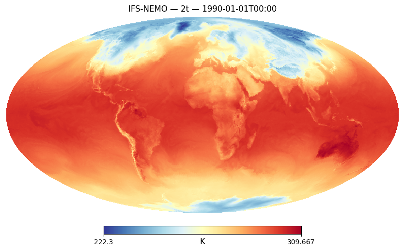
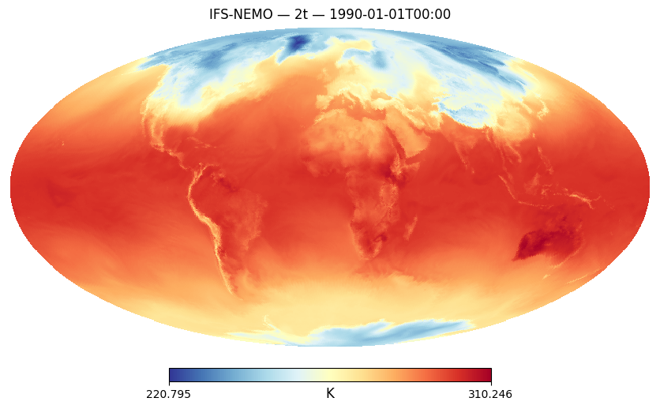
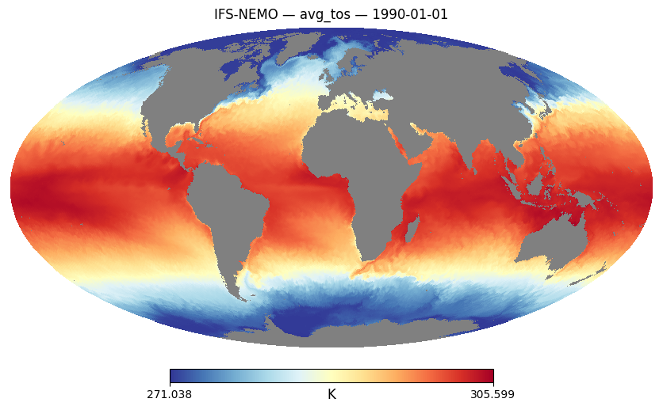
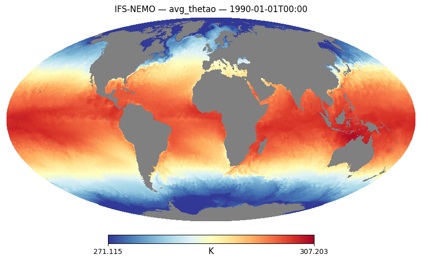
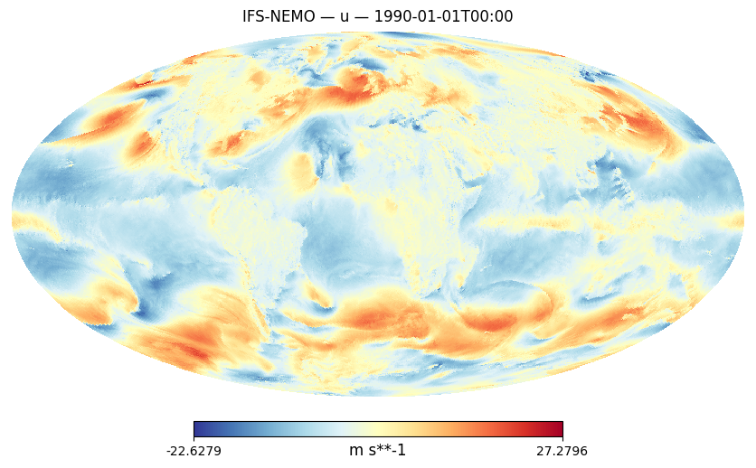
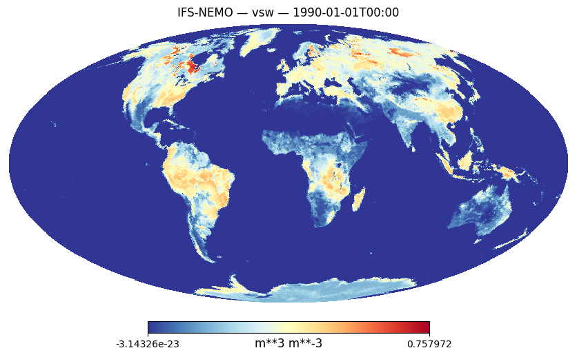
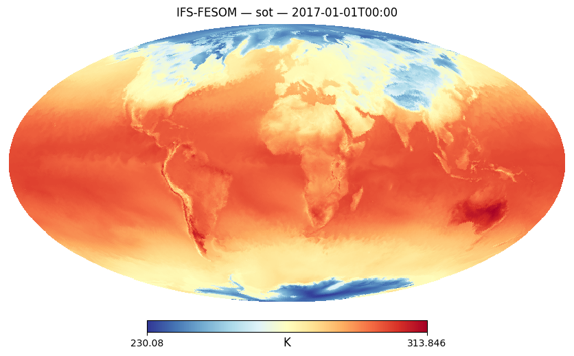

Variable Lookup — Climate DT Portfolio#
Search for a variable by shortName (e.g. 2t, avg_tos) or by
keyword in the long name (e.g. temperature, wind, salinity).
The table shows which streams (monthly, hourly, storyline), level types, frequencies, models and resolutions are available.
Use access_snippet() to get a ready-to-copy from_climate_dt() call.
Time coverage for SSP3-7.0: IFS-NEMO and IFS-FESOM data extends to 2049; ICON data extends to 2040 on the day of release. Generated code snippets automatically reflect this when requesting scenario data with all models.
Show code cell source
from destine_portfolio import find_variable, access_snippet
Search by shortName#
Show code cell source
find_variable("2t")
| stream/activity | shortName | levtype | freq | access | long_name | units | models | experiments | nside | |
|---|---|---|---|---|---|---|---|---|---|---|
| 0 | clte | 2t | sfc | hourly | hourly/sfc | 2 metre temperature | K | IFS-NEMO, IFS-FESOM, ICON | cont, hist, SSP3-7.0 | {'standard': 128, 'high': 1024} |
| 1 | storyline | 2t | sfc | hourly | hourly (storyline)/sfc | 2 metre temperature | K | IFS-FESOM | cont, hist, Tplus2.0K | {'standard': 128, 'high': 512} |
| 2 | clmn | avg_2t | sfc | monthly | monthly/sfc | Time-mean 2 metre temperature | K | IFS-NEMO, IFS-FESOM, ICON | cont, hist, SSP3-7.0 | {'standard': 128, 'high': 1024} |
Show code cell source
# Ready-to-copy code for hourly 2t
access_snippet("2t", "clte")
Show code cell source
# Ocean variable — note the different frequencies per stream
find_variable("thetao")
| stream/activity | shortName | levtype | freq | access | long_name | units | models | experiments | nside | |
|---|---|---|---|---|---|---|---|---|---|---|
| 0 | clmn | avg_thetao | o3d | monthly | monthly/o3d | Time-mean sea water potential temperature | K | IFS-NEMO, IFS-FESOM, ICON | cont, hist, SSP3-7.0 | {'standard': 128, 'high': 1024} |
| 1 | clte | avg_thetao | o3d | daily | hourly/o3d | Time-mean sea water potential temperature | K | IFS-NEMO, IFS-FESOM, ICON | cont, hist, SSP3-7.0 | {'standard': 128, 'high': 1024} |
| 2 | storyline | avg_thetao | o3d | daily | hourly (storyline)/o3d | Time-mean sea water potential temperature | K | IFS-FESOM | cont, hist, Tplus2.0K | {'standard': 128, 'high': 512} |
Show code cell source
access_snippet("avg_thetao", "clte")
Search by keyword in long name#
Show code cell source
find_variable("temperature")
| stream/activity | shortName | levtype | freq | access | long_name | units | models | experiments | nside | |
|---|---|---|---|---|---|---|---|---|---|---|
| 0 | clte | 2d | sfc | hourly | hourly/sfc | 2 metre dewpoint temperature | K | IFS-NEMO, IFS-FESOM, ICON | cont, hist, SSP3-7.0 | {'standard': 128, 'high': 1024} |
| 1 | storyline | 2d | sfc | hourly | hourly (storyline)/sfc | 2 metre dewpoint temperature | K | IFS-FESOM | cont, hist, Tplus2.0K | {'standard': 128, 'high': 512} |
| 2 | clte | 2t | sfc | hourly | hourly/sfc | 2 metre temperature | K | IFS-NEMO, IFS-FESOM, ICON | cont, hist, SSP3-7.0 | {'standard': 128, 'high': 1024} |
| 3 | storyline | 2t | sfc | hourly | hourly (storyline)/sfc | 2 metre temperature | K | IFS-FESOM | cont, hist, Tplus2.0K | {'standard': 128, 'high': 512} |
| 4 | clmn | avg_2d | sfc | monthly | monthly/sfc | Time-mean 2 metre dewpoint temperature | K | IFS-NEMO, IFS-FESOM, ICON | cont, hist, SSP3-7.0 | {'standard': 128, 'high': 1024} |
| 5 | clmn | avg_2t | sfc | monthly | monthly/sfc | Time-mean 2 metre temperature | K | IFS-NEMO, IFS-FESOM, ICON | cont, hist, SSP3-7.0 | {'standard': 128, 'high': 1024} |
| 6 | clmn | avg_skt | sfc | monthly | monthly/sfc | Time-mean skin temperature | K | IFS-NEMO, IFS-FESOM, ICON | cont, hist, SSP3-7.0 | {'standard': 128, 'high': 1024} |
| 7 | clmn | avg_t | pl | monthly | monthly/pl | Time-mean temperature | K | IFS-NEMO, IFS-FESOM, ICON | cont, hist, SSP3-7.0 | {'standard': 128, 'high': 1024} |
| 8 | clmn | avg_thetao | o3d | monthly | monthly/o3d | Time-mean sea water potential temperature | K | IFS-NEMO, IFS-FESOM, ICON | cont, hist, SSP3-7.0 | {'standard': 128, 'high': 1024} |
| 9 | clte | avg_thetao | o3d | daily | hourly/o3d | Time-mean sea water potential temperature | K | IFS-NEMO, IFS-FESOM, ICON | cont, hist, SSP3-7.0 | {'standard': 128, 'high': 1024} |
| 10 | storyline | avg_thetao | o3d | daily | hourly (storyline)/o3d | Time-mean sea water potential temperature | K | IFS-FESOM | cont, hist, Tplus2.0K | {'standard': 128, 'high': 512} |
| 11 | clmn | avg_tos | o2d | monthly | monthly/o2d | Time-mean sea surface temperature | K | IFS-NEMO, IFS-FESOM, ICON | cont, hist, SSP3-7.0 | {'standard': 128, 'high': 1024} |
| 12 | clte | avg_tos | o2d | daily | hourly/o2d | Time-mean sea surface temperature | K | IFS-NEMO, IFS-FESOM, ICON | cont, hist, SSP3-7.0 | {'standard': 128, 'high': 1024} |
| 13 | storyline | avg_tos | o2d | daily | hourly (storyline)/o2d | Time-mean sea surface temperature | K | IFS-FESOM | cont, hist, Tplus2.0K | {'standard': 128, 'high': 512} |
| 14 | clte | skt | sfc | hourly | hourly/sfc | Skin temperature | K | IFS-NEMO, IFS-FESOM, ICON | cont, hist, SSP3-7.0 | {'standard': 128, 'high': 1024} |
| 15 | storyline | skt | sfc | hourly | hourly (storyline)/sfc | Skin temperature | K | IFS-FESOM | cont, hist, Tplus2.0K | {'standard': 128, 'high': 512} |
| 16 | storyline | sot | sol | hourly | hourly (storyline)/sol | Soil temperature | K | IFS-FESOM | cont, hist, Tplus2.0K | {'standard': 128, 'high': 512} |
| 17 | clte | t | pl | hourly | hourly/pl | Temperature | K | IFS-NEMO, IFS-FESOM, ICON | cont, hist, SSP3-7.0 | {'standard': 128, 'high': 1024} |
| 18 | storyline | t | pl | hourly | hourly (storyline)/pl | Temperature | K | IFS-FESOM | cont, hist, Tplus2.0K | {'standard': 128, 'high': 512} |
Show code cell source
find_variable("wind")
| stream/activity | shortName | levtype | freq | access | long_name | units | models | experiments | nside | |
|---|---|---|---|---|---|---|---|---|---|---|
| 0 | clte | 10si | sfc | hourly | hourly/sfc | 10 metre wind speed | m s**-1 | IFS-NEMO, IFS-FESOM, ICON | cont, hist, SSP3-7.0 | {'standard': 128, 'high': 1024} |
| 1 | storyline | 10si | sfc | hourly | hourly (storyline)/sfc | 10 metre wind speed | m s**-1 | IFS-FESOM | cont, hist, Tplus2.0K | {'standard': 128, 'high': 512} |
| 2 | clte | 10u | sfc | hourly | hourly/sfc | 10 metre U wind component | m s**-1 | IFS-NEMO, IFS-FESOM, ICON | cont, hist, SSP3-7.0 | {'standard': 128, 'high': 1024} |
| 3 | storyline | 10u | sfc | hourly | hourly (storyline)/sfc | 10 metre U wind component | m s**-1 | IFS-FESOM | cont, hist, Tplus2.0K | {'standard': 128, 'high': 512} |
| 4 | clte | 10v | sfc | hourly | hourly/sfc | 10 metre V wind component | m s**-1 | IFS-NEMO, IFS-FESOM, ICON | cont, hist, SSP3-7.0 | {'standard': 128, 'high': 1024} |
| 5 | storyline | 10v | sfc | hourly | hourly (storyline)/sfc | 10 metre V wind component | m s**-1 | IFS-FESOM | cont, hist, Tplus2.0K | {'standard': 128, 'high': 512} |
| 6 | clmn | avg_10u | sfc | monthly | monthly/sfc | Time-mean 10 metre U wind component | m s**-1 | IFS-NEMO, IFS-FESOM, ICON | cont, hist, SSP3-7.0 | {'standard': 128, 'high': 1024} |
| 7 | clmn | avg_10v | sfc | monthly | monthly/sfc | Time-mean 10 metre V wind component | m s**-1 | IFS-NEMO, IFS-FESOM, ICON | cont, hist, SSP3-7.0 | {'standard': 128, 'high': 1024} |
| 8 | clmn | avg_10ws | sfc | monthly | monthly/sfc | Time-mean 10 metre wind speed | m s**-1 | IFS-NEMO, IFS-FESOM, ICON | cont, hist, SSP3-7.0 | {'standard': 128, 'high': 1024} |
| 9 | clmn | avg_u | hl | monthly | monthly/hl | Time-mean U component of wind | m s**-1 | IFS-NEMO, IFS-FESOM, ICON | cont, hist, SSP3-7.0 | {'standard': 128, 'high': 1024} |
| 10 | clmn | avg_u | pl | monthly | monthly/pl | Time-mean U component of wind | m s**-1 | IFS-NEMO, IFS-FESOM, ICON | cont, hist, SSP3-7.0 | {'standard': 128, 'high': 1024} |
| 11 | clmn | avg_v | hl | monthly | monthly/hl | Time-mean V component of wind | m s**-1 | IFS-NEMO, IFS-FESOM, ICON | cont, hist, SSP3-7.0 | {'standard': 128, 'high': 1024} |
| 12 | clmn | avg_v | pl | monthly | monthly/pl | Time-mean V component of wind | m s**-1 | IFS-NEMO, IFS-FESOM, ICON | cont, hist, SSP3-7.0 | {'standard': 128, 'high': 1024} |
| 13 | clte | u | hl | hourly | hourly/hl | U component of wind | m s**-1 | IFS-NEMO, IFS-FESOM, ICON | cont, hist, SSP3-7.0 | {'standard': 128, 'high': 1024} |
| 14 | clte | u | pl | hourly | hourly/pl | U component of wind | m s**-1 | IFS-NEMO, IFS-FESOM, ICON | cont, hist, SSP3-7.0 | {'standard': 128, 'high': 1024} |
| 15 | storyline | u | hl | hourly | hourly (storyline)/hl | U component of wind | m s**-1 | IFS-FESOM | cont, hist, Tplus2.0K | {'standard': 128, 'high': 512} |
| 16 | storyline | u | pl | hourly | hourly (storyline)/pl | U component of wind | m s**-1 | IFS-FESOM | cont, hist, Tplus2.0K | {'standard': 128, 'high': 512} |
| 17 | clte | v | hl | hourly | hourly/hl | V component of wind | m s**-1 | IFS-NEMO, IFS-FESOM, ICON | cont, hist, SSP3-7.0 | {'standard': 128, 'high': 1024} |
| 18 | clte | v | pl | hourly | hourly/pl | V component of wind | m s**-1 | IFS-NEMO, IFS-FESOM, ICON | cont, hist, SSP3-7.0 | {'standard': 128, 'high': 1024} |
| 19 | storyline | v | hl | hourly | hourly (storyline)/hl | V component of wind | m s**-1 | IFS-FESOM | cont, hist, Tplus2.0K | {'standard': 128, 'high': 512} |
| 20 | storyline | v | pl | hourly | hourly (storyline)/pl | V component of wind | m s**-1 | IFS-FESOM | cont, hist, Tplus2.0K | {'standard': 128, 'high': 512} |
Show code cell source
access_snippet("u", "clte")
Show code cell source
find_variable("soil")
| stream/activity | shortName | levtype | freq | access | long_name | units | models | experiments | nside | |
|---|---|---|---|---|---|---|---|---|---|---|
| 0 | clmn | avg_vsw | sol | monthly | monthly/sol | Time-mean volumetric soil moisture | m**3 m**-3 | IFS-NEMO, IFS-FESOM, ICON | cont, hist, SSP3-7.0 | {'standard': 128, 'high': 1024} |
| 1 | storyline | sot | sol | hourly | hourly (storyline)/sol | Soil temperature | K | IFS-FESOM | cont, hist, Tplus2.0K | {'standard': 128, 'high': 512} |
| 2 | clte | vsw | sol | hourly | hourly/sol | Volumetric soil moisture | m**3 m**-3 | IFS-NEMO, IFS-FESOM, ICON | cont, hist, SSP3-7.0 | {'standard': 128, 'high': 1024} |
| 3 | storyline | vsw | sol | hourly | hourly (storyline)/sol | Volumetric soil moisture | m**3 m**-3 | IFS-FESOM | cont, hist, Tplus2.0K | {'standard': 128, 'high': 512} |
Show code cell source
access_snippet("vsw", "clte")
Show code cell source
access_snippet("sot", "storyline")
Show code cell source
# Scenario snippet — note the ICON time limit in the generated comment
access_snippet("2t", "clmn", experiment="SSP3-7.0")
Full catalogue#
Show code cell source
find_variable()
| stream/activity | shortName | levtype | freq | access | long_name | units | models | experiments | nside | |
|---|---|---|---|---|---|---|---|---|---|---|
| 0 | clte | 10si | sfc | hourly | hourly/sfc | 10 metre wind speed | m s**-1 | IFS-NEMO, IFS-FESOM, ICON | cont, hist, SSP3-7.0 | {'standard': 128, 'high': 1024} |
| 1 | storyline | 10si | sfc | hourly | hourly (storyline)/sfc | 10 metre wind speed | m s**-1 | IFS-FESOM | cont, hist, Tplus2.0K | {'standard': 128, 'high': 512} |
| 2 | clte | 10u | sfc | hourly | hourly/sfc | 10 metre U wind component | m s**-1 | IFS-NEMO, IFS-FESOM, ICON | cont, hist, SSP3-7.0 | {'standard': 128, 'high': 1024} |
| 3 | storyline | 10u | sfc | hourly | hourly (storyline)/sfc | 10 metre U wind component | m s**-1 | IFS-FESOM | cont, hist, Tplus2.0K | {'standard': 128, 'high': 512} |
| 4 | clte | 10v | sfc | hourly | hourly/sfc | 10 metre V wind component | m s**-1 | IFS-NEMO, IFS-FESOM, ICON | cont, hist, SSP3-7.0 | {'standard': 128, 'high': 1024} |
| ... | ... | ... | ... | ... | ... | ... | ... | ... | ... | ... |
| 188 | storyline | vsw | sol | hourly | hourly (storyline)/sol | Volumetric soil moisture | m**3 m**-3 | IFS-FESOM | cont, hist, Tplus2.0K | {'standard': 128, 'high': 512} |
| 189 | clte | w | pl | hourly | hourly/pl | Vertical velocity | Pa s**-1 | IFS-NEMO, IFS-FESOM, ICON | cont, hist, SSP3-7.0 | {'standard': 128, 'high': 1024} |
| 190 | storyline | w | pl | hourly | hourly (storyline)/pl | Vertical velocity | Pa s**-1 | IFS-FESOM | cont, hist, Tplus2.0K | {'standard': 128, 'high': 512} |
| 191 | clte | z | pl | hourly | hourly/pl | Geopotential | m**2 s**-2 | IFS-NEMO, IFS-FESOM, ICON | cont, hist, SSP3-7.0 | {'standard': 128, 'high': 1024} |
| 192 | storyline | z | pl | hourly | hourly (storyline)/pl | Geopotential | m**2 s**-2 | IFS-FESOM | cont, hist, Tplus2.0K | {'standard': 128, 'high': 512} |
193 rows × 10 columns
Test the above snippets#
Show code cell source
import logging, warnings
import earthkit.data
from polytope_zarr import PolytopeZarrStore
import healpy as hp
# Disable earthkit disk cache (polytope_zarr caches decoded arrays in memory)
earthkit.data.config.set("cache-policy", "off")
# Silence verbose output from polytope / earthkit internals
for _ln in ("polytope", "polytope.api", "earthkit.data", "urllib3"):
logging.getLogger(_ln).setLevel(logging.WARNING)
warnings.filterwarnings("ignore", category=DeprecationWarning)
Show code cell source
store = PolytopeZarrStore.from_climate_dt(
models=["IFS-NEMO", "IFS-FESOM", "ICON"],
experiment="hist",
levtype="sfc",
frequency="hourly",
start_date="1990-01-01T00:00:00",
end_date="2014-12-31T23:00:00",
resolution="standard",
)
ds = store.open()
field = ds["2t"].sel(model="IFS-NEMO", time="1990-01-01T00:00")
field_values = field.values # triggers the Polytope request
Show code cell source
hp.mollview(field_values, title="IFS-NEMO — 2t — 1990-01-01T00:00",
unit="K", cmap="RdYlBu_r", nest=True, flip="geo")

Show code cell source
# circumventing the store to use earthkit's built-in caching and decoding
r = store.last_request
r["request"]
{'class': 'd1',
'dataset': 'climate-dt',
'type': 'fc',
'expver': '0001',
'generation': '2',
'realization': '1',
'activity': 'baseline',
'experiment': 'hist',
'levtype': 'sfc',
'resolution': 'standard',
'stream': 'clte',
'param': '2t',
'model': 'IFS-NEMO',
'date': '19900101',
'time': '0000/0100/0200/0300/0400/0500/0600/0700/0800/0900/1000/1100/1200/1300/1400/1500/1600/1700/1800/1900/2000/2100/2200/2300'}
Show code cell source
data = earthkit.data.from_source("polytope", r["collection"], r["request"],
address=r["address"], stream=False)
field = data.to_numpy()
field.shape
(24, 196608)
Show code cell source
hp.mollview(field.mean(axis=0), title="IFS-NEMO — 2t — 1990-01-01T00:00",
unit="K", cmap="RdYlBu_r", nest=True, flip="geo")

Show code cell source
store = PolytopeZarrStore.from_climate_dt(
models=["IFS-NEMO", "IFS-FESOM", "ICON"],
experiment="hist",
levtype="o2d",
frequency="monthly",
years=range(1990, 2015),
resolution="standard",
)
ds = store.open()
field = ds["avg_tos"].sel(model="IFS-NEMO", time="1990-01-01")
field_values = field.values # triggers the Polytope request
Show code cell source
hp.mollview(field_values, title="IFS-NEMO — avg_tos — 1990-01-01",
unit="K", cmap="RdYlBu_r", nest=True, flip="geo")

Show code cell source
store = PolytopeZarrStore.from_climate_dt(
models=["IFS-NEMO", "IFS-FESOM", "ICON"],
experiment="hist",
levtype="o3d",
frequency="hourly",
start_date="1990-01-01T00:00:00",
end_date="2014-12-31T23:00:00",
resolution="standard",
)
ds = store.open()
field = ds["avg_thetao"].sel(model="IFS-NEMO", time="1990-01-01T00:00", level=1)
field_values = field.values # triggers the Polytope request
Show code cell source
hp.mollview(field_values, title="IFS-NEMO — avg_thetao — 1990-01-01T00:00",
unit="K", cmap="RdYlBu_r", nest=True, flip="geo")

Show code cell source
store = PolytopeZarrStore.from_climate_dt(
models=["IFS-NEMO", "IFS-FESOM", "ICON"],
experiment="hist",
levtype="pl",
frequency="hourly",
start_date="1990-01-01T00:00:00",
end_date="2014-12-31T23:00:00",
resolution="standard",
)
ds = store.open()
field = ds["u"].sel(model="IFS-NEMO", time="1990-01-01T00:00", level=1000)
field_values = field.values # triggers the Polytope request
Show code cell source
hp.mollview(field_values, title="IFS-NEMO — u — 1990-01-01T00:00",
unit="m s**-1", cmap="RdYlBu_r", nest=True, flip="geo")

Show code cell source
store = PolytopeZarrStore.from_climate_dt(
models=["IFS-NEMO", "IFS-FESOM", "ICON"],
experiment="hist",
levtype="sol",
frequency="hourly",
start_date="1990-01-01T00:00:00",
end_date="2014-12-31T23:00:00",
resolution="standard",
)
ds = store.open()
field = ds["vsw"].sel(model="IFS-NEMO", time="1990-01-01T00:00", level=1)
field_values = field.values # triggers the Polytope request
Show code cell source
hp.mollview(field_values, title="IFS-NEMO — vsw — 1990-01-01T00:00",
unit="m**3 m**-3", cmap="RdYlBu_r", nest=True, flip="geo")

Show code cell source
store = PolytopeZarrStore.from_climate_dt(
models=["IFS-FESOM"],
experiment=['cont', 'hist', 'Tplus2.0K'],
activity="story-nudging",
levtype="sol",
frequency="hourly",
start_date="2017-01-01T00:00:00",
end_date="2024-12-31T23:00:00",
resolution="standard",
)
ds = store.open()
field = ds["sot"].sel(climate="cont", time="2017-01-01T00:00", level=1)
field_values = field.values # triggers the Polytope request
Show code cell source
hp.mollview(field_values, title="IFS-FESOM — sot — 2017-01-01T00:00",
unit="K", cmap="RdYlBu_r", nest=True, flip="geo")
